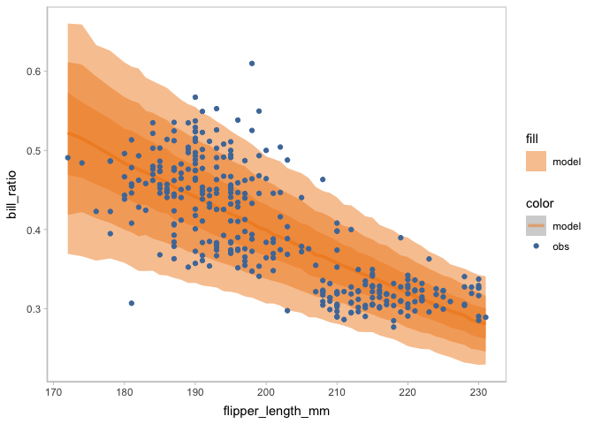

modelcheck is a visualization grammar designed to make it easy to generate informative visualizations for model checking. The modelcheck grammar assumes a basic workflow for creating model checks. First, the model predictions or model features need to be extracted as a distribution of data from a model object, i.e. data tidying. Then the user must specify an uncertainty representation to describe the selected distribution(s). They must also specify the presentation of the observed data. The user can choose among multiple comparative layouts to structure their comparison between observed data and model predictions.
Installation
You can install the development version of modelcheck from GitHub with:
# install.packages("devtools")
devtools::install_github("MUCollective/modelcheck")Usage
Background: model
We use a simple model to show the usage of modelcheck.
library(brms)
#> Loading required package: Rcpp
#> Loading 'brms' package (version 2.19.0). Useful instructions
#> can be found by typing help('brms'). A more detailed introduction
#> to the package is available through vignette('brms_overview').
#>
#> Attaching package: 'brms'
#> The following object is masked from 'package:stats':
#>
#> ar
model = brm(
bf(mpg ~ disp + vs + am,
sigma ~ vs + am),
init = "0",
data = mtcars,
iter = 6000,
file = "models/example_model.rds" # cache model (can be removed)
)The results…
model
#> Family: gaussian
#> Links: mu = identity; sigma = log
#> Formula: mpg ~ disp + vs + am
#> sigma ~ vs + am
#> Data: mtcars (Number of observations: 32)
#> Draws: 4 chains, each with iter = 6000; warmup = 3000; thin = 1;
#> total post-warmup draws = 12000
#>
#> Population-Level Effects:
#> Estimate Est.Error l-95% CI u-95% CI Rhat Bulk_ESS Tail_ESS
#> Intercept 23.25 2.87 17.57 28.92 1.00 6198 6420
#> sigma_Intercept 0.87 0.20 0.50 1.30 1.00 10336 7471
#> disp -0.02 0.01 -0.04 -0.01 1.00 6404 6672
#> vs 2.74 1.74 -0.73 6.14 1.00 6770 6991
#> am 2.74 1.81 -0.76 6.36 1.00 6100 7119
#> sigma_vs 0.27 0.34 -0.38 0.95 1.00 6544 7801
#> sigma_am 0.34 0.36 -0.38 1.03 1.00 6925 7174
#>
#> Draws were sampled using sampling(NUTS). For each parameter, Bulk_ESS
#> and Tail_ESS are effective sample size measures, and Rhat is the potential
#> scale reduction factor on split chains (at convergence, Rhat = 1).Examples
You can create a default model check to do a posterior predictive check by using mcplot() (using coord_flip() to flip the response variable to the x-axis).
library(modelcheck)
library(ggplot2)
library(dplyr)
#>
#> Attaching package: 'dplyr'
#> The following objects are masked from 'package:stats':
#>
#> filter, lag
#> The following objects are masked from 'package:base':
#>
#> intersect, setdiff, setequal, union
model %>%
mcplot() +
mc_gglayer(coord_flip())
To control how the distribution is drawn from model, you can add a mc_distribution() to mcplot(). For example, there are two push forward transformations mu and sigma besides the predictive distribution in the Gaussian example model we are using. Here, we are drawing the posterior distribution of mu from the Gaussian model.
model %>%
mcplot() +
mc_distribution("mu") +
mc_gglayer(coord_flip())
To add marginal effects check, you can use mc_condition_on() to add an x-axis, row grid, and column grid.
model %>%
mcplot() +
mc_distribution("mu") +
mc_condition_on(x = vars(disp))
Or you can check the distribution of sigma in the model by specifying mc_distribution("sigma"). You may find, however, that the unit of observed data misaligned with the sigma distribution. You can add observation_transform to mcplot() to transform the observed data to a comparable unit to sigma.
sd_function = function(df) {df %>% group_by(vs) %>% mutate(observation = sd(observation))}
model %>%
mcplot(observation_transform = sd_function) +
mc_distribution("sigma") +
mc_condition_on(x = vars(vs))
For the model checks that have a continuous conditional variable, modelcheck implements uncertainty representations, e.g., line + ribbon plot and point + interval plot, that encode the uncertainty in the model and also reveal the trend of response variable over the conditional variable. For those model checks that have no conditional variable or have a discrete conditional variable, modelcheck implements a group of uncertainty representations, e.g., dots plot, eye plot, and gradient plot, that show the distribution of the model.
You can use mc_model_lineribbon() to use line + ribbon plot to check the trend of mpg with uncertainty encoded by ribbon.
model %>%
mcplot() +
mc_distribution("mu") +
mc_condition_on(x = vars(disp)) +
mc_model_lineribbon() If conditional on a discrete variable, you can use
If conditional on a discrete variable, you can use mc_model_dots.
model %>%
mcplot(observation_transform = sd_function) +
mc_distribution("sigma") +
mc_model_dots() +
mc_condition_on(x = vars(vs))
mcplot() puts the model predictions and data observations superposed by default. You can change that by using mc_layout_*(). Here we change the comparative layout into juxtaposition.
model %>%
mcplot() +
mc_distribution("mu", ndraws = 500) +
mc_condition_on(x = vars(disp)) +
mc_model_lineribbon() +
mc_layout_juxtaposition()
#> Warning: Removed 17 rows containing missing values (`stat_slabinterval()`).